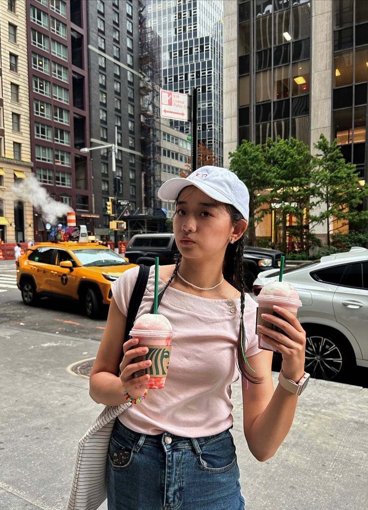

I am a senior at Edward R. Murrow High School with a passion for robotics, engineering, and technology. I am currently working on hands-on engineering projects, particularly those involving Arduino, electronics, and mechanical design. I am excited to continue exploring electrical engineering in college and beyond.
My interest in engineering started through gymnastics, analyzing motion and mechanics. Gymnastics taught me the importance of combining creativity with precision, inspiring me to approach engineering projects with both analytical thinking and hands-on experimentation.
I used TinkerCAD to design the robotic arm layout, creating a detailed 3D model that allowed me to visualize each joint, servo placement, and range of motion. This digital prototype helped me plan the mechanical structure and test how the arm would move before building a physical version, ensuring that all components would fit together efficiently and function as intended.
I used an Arduino UNO R3 as the main microcontroller to control the robotic arm, along with a servomotor to provide precise movement. I integrated a joystick as the user interface, allowing manual control of the arm’s motion. Before assembling the physical components, I thoroughly tested both the circuit and the code to ensure the servo responded correctly to the joystick inputs and that the wiring was accurate.
I built a joystick-controlled robotic arm using Arduino and servo motor. The arm moves in the X and Y directions and can draw using a pen attached to the end. This project demonstrates robotic motion control and human–machine interaction. This project taught me servo control, Arduino programming, and mechanical design.
▶ Watch Process VideoI am developing the idea for a camera-based motion tracking app after a gymnastics injury, realizing that every athlete needs a personalized approach to training. My early focus is on improving handstand alignment, and I included a photo of myself performing a handstand as a reference for the posture the app will eventually analyze. I plan to research motion tracking tools such as MediaPipe and build a prototype interface for the app. Finally, I will test the system to evaluate its effectiveness.
My vlog channel connects Central Asian students with American culture and student life, sharing experiences in education, STEM, and daily life.
Through my videos, I aim to foster cross-cultural understanding and inspire others to pursue their passions in STEM and beyond.
Email: asalnazar2@gmail.com